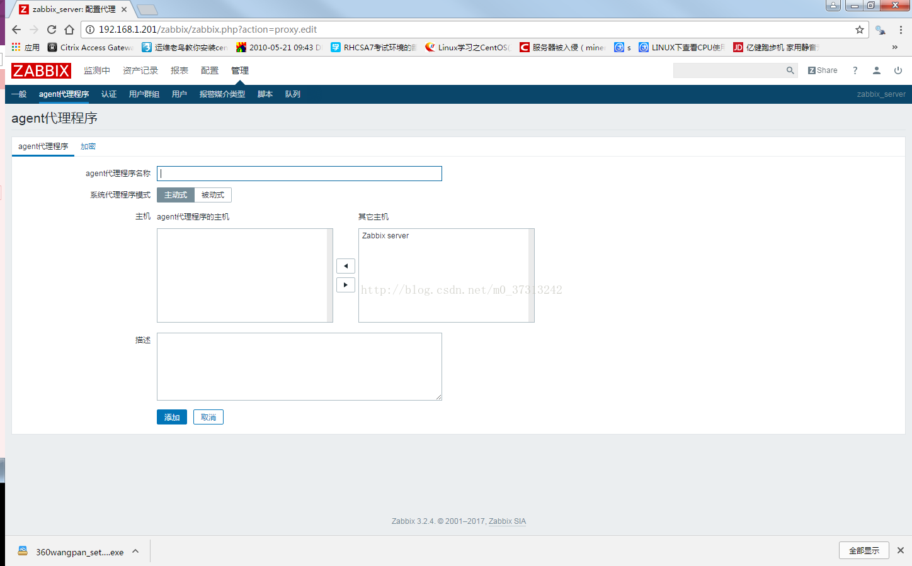

一、系统环境
|
角色 |
IP |
服务 |
端口 |
|
zabbix-server zabbix-WEB |
192.168.1.201 |
mariadb5.5.52/Apache2.4.6/php 5.4.16/zabbix-server 3.2.4/zabbix-agent 3.2.4 |
3306\80\10051\10050 |
|
zabbix-proxy |
192.168.1.202 |
mariadb/zabbix-proxy/zabbix-agent |
3306\10051\10050 |
1、配置系统yum 163源
# cd /etc/yum.repos.d
#wget http://mirrors.163.com/.help/CentOS7-Base-163.repo # $releasever替换成相应版本 7
# yum clean all && yum makecache (yumrepolist)
2、配置zabbix yum源
#rpm -ivh http://repo.zabbix.com/zabbix/3.2/rhel/7/x86_64/zabbix-release-3.2-1.el7.noarch.rpm
# more /etc/yum.repos.d/zabbix.repo
|
[zabbix] name=Zabbix Official Repository - $basearch baseurl=http://repo.zabbix.com/zabbix/3.2/rhel/7/$basearch/ enabled=1 gpgcheck=1 gpgkey=file:///etc/pki/rpm-gpg/RPM-GPG-KEY-ZABBIX-A14FE591
[zabbix-non-supported] name=Zabbix Official Repository non-supported - $basearch baseurl=http://repo.zabbix.com/non-supported/rhel/7/$basearch/ enabled=1 gpgkey=file:///etc/pki/rpm-gpg/RPM-GPG-KEY-ZABBIX gpgcheck=1 |
# yumrepolist
3、关闭防火墙等
# systemctl disable firewalld && systemctl stop firewalld
# vi /etc/selinux/config
| SELINUX=disabled |
三、安装Mariadb
1、yum安装
#yum -y install mariadb*
2、自启
#systemctl enable mariadb
#systemctl start mariadb
3、配置mysql密码
#mysql_secure_installation
4、登入验证
#mysql -uroot -predhat
四、安装zabbix-proxy
1、yum安装
#yum -y install zabbix-proxy zabbix-get zabbix-sender
2、配置mariadb
# systemctl enable mariadb
# systemctl start mariadb
# mysql_secure_installation
# mysql -uroot -predhat
|
mysql> create database zabbix_proxy
character set utf8; mysql> grant all privileges on zabbix_proxy.*
to zabbix@localhost identified by 'zabbix'; //密码是
zabbix mysql>
quit |
#cd /usr/share/doc/zabbix-proxy-mysql-3.2.4/
#zcat schema.sql.gz | mysql -uzabbix -p zabbix_proxy #导入proxy数据文件
#mysql -uzabbix-pzabbix #登入验证
3、配置zabbix-proxy
# systemctl enablezabbix-proxy
#vi /etc/zabbix/zabbix_proxy.conf
|
Server=192.168.1.201 Hostname=Zabbix_proxy LogFile=/var/log/zabbix/zabbix_proxy.log LogFileSize=0 PidFile=/var/run/zabbix/zabbix_proxy.pid DBHost=localhost DBName=zabbix_proxy DBUser=zabbix DBPassword=zabbix SNMPTrapperFile=/var/log/snmptrap/snmptrap.log Timeout=4 ExternalScripts=/usr/lib/zabbix/externalscripts LogSlowQueries=3000 CacheSize和 fping |
#systemctl start zabbix-proxy
#tailf /var/log/zabbix/zabbix_proxy.log
4、zabbix-server Web端配置
管理--agent代理程序--创建代理
agent代理程序名称：【填写zabbix-proxy conf配置中的Hostname】

6、验证
#tailf /var/log/zabbix/zabbix_proxy.log
received configuration data from server at"192.168.1.201", datalen 2911 #说明对接成功